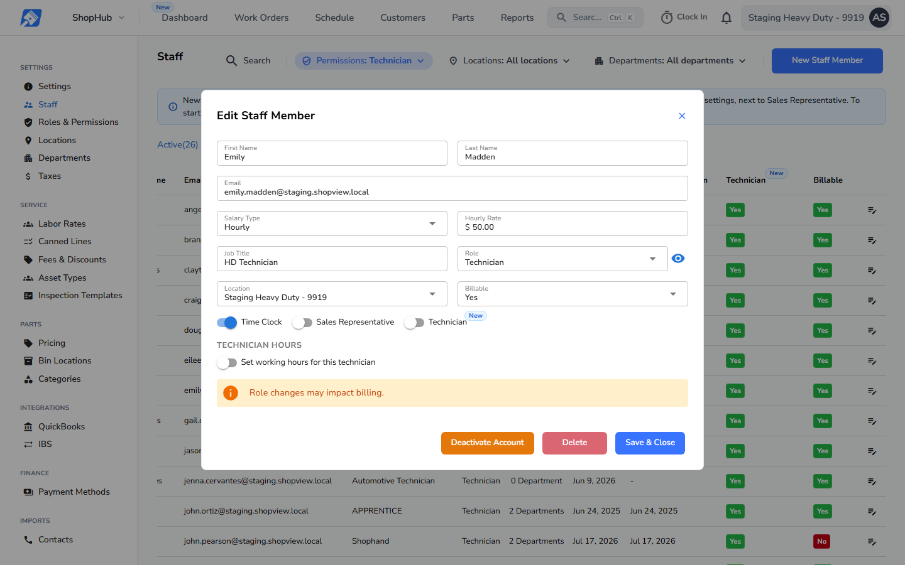
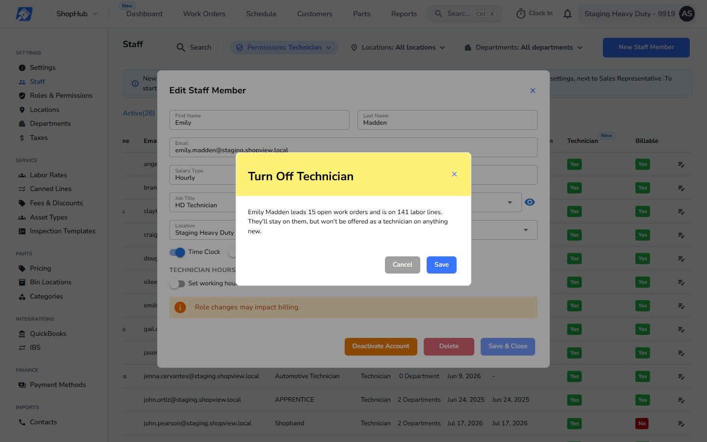

Edit Staff Member for Emily Madden, a technician who leads open work. New, no before exists: production has no Technician toggle and no warning. Left to right: switched off, then Save & Close.
This buildSwitched off

Technician switched off, not saved yet. Switching Time Clock off has the same effect, because it turns Technician off.
This buildTurn Off Technician warning

Save shows this first, only when the person still leads an open work order or is on a line of one (with labor, added with Add Technician, or as the line's technician), at any location. Otherwise Save goes straight on.
Text, verbatim with this demo's counts: "Emily Madden leads 15 open work orders and is on 141 labor lines. They'll stay on them, but won't be offered as a technician on anything new."
Cancel, the X or Escape leave the staff member unsaved. Save continues the save. Nothing is unassigned either way.